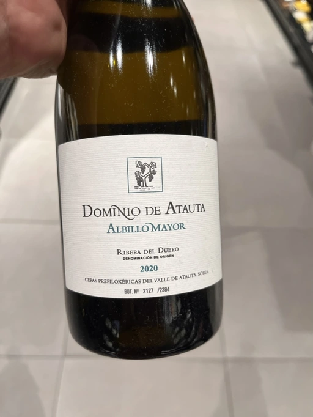

- Type
- White Still, Dry
- Producer
- Dominio de Atauta
- Vintage
- 2020
- Location
- Spain, Ribera del Duero DO
- Grapes
- Albillo Mayor
- Alcohol
- 12.5
- Sugar
- NA
- Price
- 1190 UAH
- Cellar
- N/A
Ratings
2022-11-25 - 7.25
I tasted it blind and didn’t guess. My bet was either Rioja or Andalusia. It’s good but overly oaked and empty. Galicia apple juice with vanilla.
Related